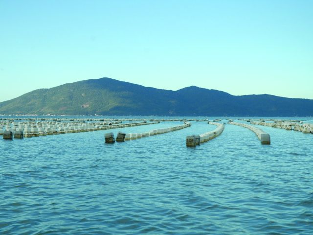
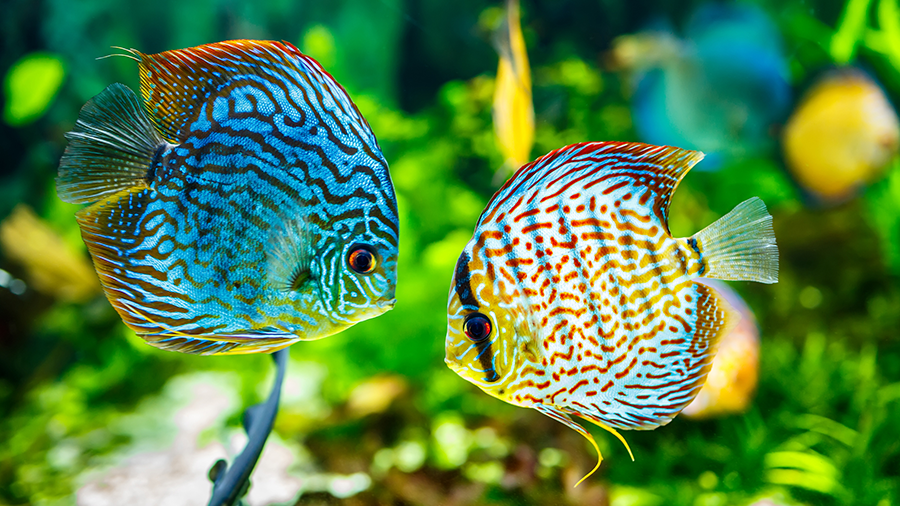

Nova Técnica de Cultivo de Ostras
Uma nova técnica de cultivo de ostras foi desenvolvida por pesquisadores de Florianópolis. A técnica promete aumentar a produção e reduzir custos.
Peixes Ornamentais em Alta
A demanda por peixes ornamentais cresceu 20% no último ano, impulsionando o setor de aquicultura na região sul do Brasil.
